Rootdeep Burrows: layout and look
cc-P141, 2026-10-18. Drawn from the layout spec (layout.json) and the seeder's data (ClusterFRootdeepSeeder.cs), over a vseUOAware radar export of the same rectangle. Nothing is placed and no map is edited until you approve.
Approve this layout and look, or tell me what to change.Open choices:
- The layout as drawn (zones, rooms, the Vault's four rooms, the crawlway at x 5160, the landing ankh).
- One look per zone: pick a set below (or mix: say which floor, wall and door).
- The Warren fillers: Rotworm (rare tank) and Grubber (rare runner) kept; BloodWorm moved to the Gloom (it has 374-422 hits, too strong for tier 1). Or drop it.
- A Young trainee who dies in the Vault wakes at New Haven's healer (pinned's Young rule), not the landing: keep, or ask for a Vault rule (needs a pinned patch).
- Third-party kits: DRC1K's terms forbid modifications and reposting; say if any of them should be asked for or used.
The layout
Legend: zone colours are floor; brown-gray is wall; near-black is a solid block (pillar, shelving, roots, crystal, webs); yellow is the Vault doorway; orange is the one-way crawlway (arrow south); white is the ankh; the blue ring is the arrival from the B1 hole; numbered dots are spawners (table below), brown squares are the decoy chests; the red box is the Overdraft's fight space and the dotted white rings are its kite loops around the two pillars; faint squares are each spawner's home range; the red line is x 5140.
Does the Vault fit the Overdraft fight?
Yes. The Strongroom is 37 x 16 tiles (556 walkable after the two 3 x 6 pillars). The Overdraft is one mobile on one tile, drawn about 89 x 83 px at 1.5x (about two tiles wide on screen) and walks at 0.4 s a tile; a running player covers a tile in 0.2 s. Each pillar loop is 22 tiles round, so a player can kite it around either pillar or in a figure eight through the 13-tile gap between them, with the three decoy chests a room away in the Deposit Hall. Nothing more is needed; the spare room is the space between the pillars and the walls (4 to 8 tiles each side).
Spawners (the seeder's data)
Placed by [ClusterFSeedRootdeep once the walls exist (it refuses on void land). Also placed: the landing ankh at 5206,1136 (AnkhWest, P137's method) and the crawlway at 5160,1159.
Look: candidate tiles per zone
Stock tiles are rendered by vseUOAware's render_art_tile from the client's art; every one is a tile OSI's own Trammel dungeons use (see dungeon-survey.json). vseUOAware has no texture (texmaps) renderer, so floors show as their land-art diamond, which is how the client draws flat land anyway. Third-party previews are local only (their terms forbid reposting and both repos are public): they show when this page is opened from Chase's PC after build_mockup.py has run.
The Landing
L-A Dungeon stone cavestock (EA art, ships as is); used in Deceit, Hythloth
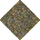
floor
land 0x0245
cave
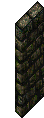
wall
item 0x0242
dungeon wall
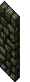
wall
item 0x0241
dungeon wall
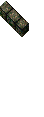
arch
item 0x0247
dungeon arch
L-B Rough cavestock (EA art, ships as is); used in Orc Cave, Covetous
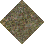
floor
item 0x053D
cave floor
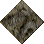
wall
land 0x025A
cave
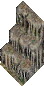
steps
item 0x079E
cave steps
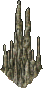
decor
item 0x08E1
stalagmites
X-1 Custom cave entrances (otimpyre)third-party: third-party\custom-caves\Custom Caves EntrancesCREDIT (otimpyre); no terms stated: ship only in the player package or a private repo, never repost
Cave Entrances (Q#347) is queued, not on disk yet.
The Vault (tutorial only)
V-A Marble strongroomstock (EA art, ships as is); used in stock marble (banks, Wind)
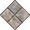
floor
land 0x0486
marble
wall
item 0x00F8
marble wall
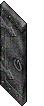
door
item 0x0675
metal door
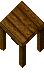
decor
item 0x0B40
counter
V-B Sandstone vaultstock (EA art, ships as is); used in stock sandstone
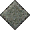
floor
item 0x051D
stone pavers
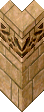
wall
item 0x0158
sandstone wall
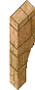
arch
item 0x0190
sandstone arch
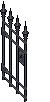
door
item 0x0824
iron gate
V-C Dungeon stone vaultstock (EA art, ships as is); used in Wrong, Terathan Keep
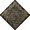
floor
land 0x043E
stone
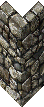
wall
item 0x001A
stone wall
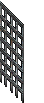
door
item 0x06F5
portcullis
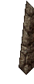
arch
item 0x01E6
stone arch
X-2 Blue stone tiles (DRC1K)third-party: third-party\drc1k-uoassets\Blue_Stone_AssetsCREDIT (DRC1K); non-commercial; no redistribution outside the client; NO MODIFICATIONS (recolour needs his OK)

church_wall.bmp

arch_west.bmp

round.bmp
X-3 Ultimate Dungeon Wall Set (DRC1K)third-party: third-party\drc1k-uoassets\The Ultimate Dungeon Wall Set by-DRC1KCREDIT (DRC1K); non-commercial; no redistribution outside the client; NO MODIFICATIONS

Ruined_Dungeon_Wall_1.bmp

Round_Ruined_Dungeon_Wall_1.bmp

Dungeon_Stairs_1.bmp
The Warren
W-A Dirt burrowsstock (EA art, ships as is); used in stock dirt, cave walls
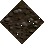
floor
land 0x0071
dirt
decor
item 0x08E1
stalagmites
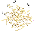
decor
item 0x0F34
hay
W-B Cave burrowsstock (EA art, ships as is); used in Destard, Despise
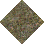
floor
land 0x0246
cave
wall
item 0x0241
dungeon wall
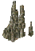
decor
item 0x08E5
stalagmites
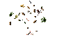
decor
item 0x10EE
garbage
X-4 Gray rocks (DRC1K)third-party: third-party\drc1k-uoassets\gray-rocks-asset-by-DRC1KCREDIT (DRC1K); non-commercial; no redistribution outside the client; NO MODIFICATIONS

rock1.bmp

rock4.bmp

rock8.bmp
The Tangle
T-A Rooted cavestock (EA art, ships as is); used in Despise (mushrooms), stock vines
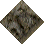
wall
land 0x0266
cave
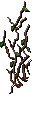
decor
item 0x0CF1
vines
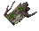
decor
item 0x0CF3
fallen log
T-B Root forest under earthstock (EA art, ships as is); used in stock dirt and o'hii roots
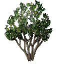
decor
item 0x0C9E
o'hii tree
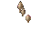
decor
item 0x0D0C
mushrooms
Giant Blue / Red Mushrooms (Q#235, Q#236) are queued, not on disk yet.
The Dawnseam
D-A Crystal seamstock (EA art, ships as is); used in stock crystal (Ter Mur style)
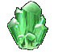
decor
item 0x2224
crystal
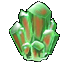
decor
item 0x2228
crystal
D-B Stone seamstock (EA art, ships as is); used in Wrong, Hythloth
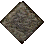
floor
land 0x0441
stone
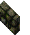
wall
item 0x02FE
dungeon wall
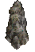
decor
item 0x08E3
flowstone
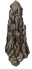
decor
item 0x08E8
flowstone
Crystal Set (Q#284) and Crystal Wall (Q#302) are queued, not on disk yet; Ore Stalagmite deposits Q#299 too.
The Gloom
G-A Terathan dark stonestock (EA art, ships as is); used in Terathan Keep
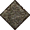
floor
land 0x0440
stone
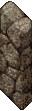
wall
item 0x01D0
stone wall
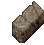
wall
item 0x01EA
stone wall
decor
item 0x0EE3
spiderweb
G-B Webbed cavestock (EA art, ships as is); used in Covetous, Terathan Keep
wall
item 0x0242
dungeon wall

floor
item 0x0523
stone pavers Dark
X-5 Ruined dungeon walls, dark (DRC1K)third-party: third-party\drc1k-uoassets\The Ultimate Dungeon Wall Set by-DRC1KCREDIT (DRC1K); non-commercial; no redistribution outside the client; NO MODIFICATIONS

Ruined_Dungeon_Wall_20.bmp

Ruined_Dungeon_Wall_30.bmp
Gloom Queen's lair
Q-A Lair arch and websstock (EA art, ships as is); used in Terathan Keep
arch
item 0x01E6
stone arch
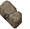
wall
item 0x01E9
stone wall
decor
item 0x0EE3
spiderweb
The crawlway
C-A Cave-in and crawlway (as built)stock (EA art, ships as is); used in the RootdeepCrawlway item: closed rocks, open hole
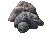
closed
item 0x1367
rocks
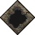
open
item 0x1B71
hole
X-6 Cave hole (otimpyre)third-party: third-party\holes\Holes\[Custom Art] Hole CaveEA (built from EA solen hole art: ship as patch records only); CREDIT (otimpyre); no terms stated, never repost
Floors and blocks in the spec
8555 floor tiles, 1618 wall tiles, 272 solid tiles.